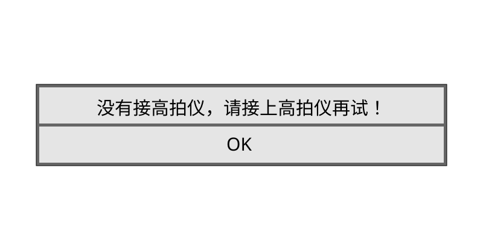

C T
中共党员，一级教师。福州市语文骨干教师。擅长小学中、高年级语文教学。充分发挥市骨干教师的引领作用，多次承担市级、区级公开教学、专题讲座、送培送教、师徒结对活动。平时潜心教育教学科研工作。其中两个课题荣获省级优秀课题。撰写的多篇论文被各级各类CN刊物收录发表。曾获得“仓山区先进教育工作者”“福州市教育系统先进教育工作者”称号。
教育格言：
用爱浇灌，静待花开。
——东升小学官网
六年级以来，CT逐渐成为同学们讨论的重点对象，甚至与ET的热度齐平。他很特别的地方主要是言语（自相矛盾、偏题等）和字迹（打横勾、无人能模仿等），以及习惯（展台、粉笔、木桌、递等式等）、装备（文件夹、高山流水铃声、眼睛、衣服等），且CT的性格越发招人讨厌。
CT自称“和其他老师与众不同”。在CT刚接手我们班时，就说自己“喜欢小声地、笑笑地整人”，而且“从不骂人”。很明显，CT有时也并非如此。例如撕优化事件,还有名言“……你个死人头”，以及“傻逼”等字眼。
外貌
CT外貌属于很与众不同的那种。他身材很胖，尤其在肚子和脸上体现出来。CT的脸可以说比较“扁平”。
他还习惯戴一副方形眼镜，自称“有文化的象征”。眼睛的镜片极窄，边框呈黑色，有类似鸟巢的花纹。CT戴眼镜时，会讲眼镜自然放在鼻梁上方，从学生的视角来看，CT的眼睛根本不在境况内，而是在镜框上面。这副眼镜的结构也很特别,其中一个镜腿可以绕镜框360度旋转，以至于CT戴眼镜时，时有镜腿脱落的情况。
CT喜欢穿“比音勒芬”牌子的衣服（参见比音勒芬官网)

东升小学官网上的CT照片
文件夹
文件夹也是CT上课必备物资，每次都鼓鼓囊囊的。文件夹呈蓝色，可以直接开合，CT在走到教室的路上时，会夹住它以防东西洒落。
CT的文件夹里有什么呢？
- 语文书
- 语文优化
- 五三
- 答案全解全析
- 课堂笔记
- 自己的练习
- 作文优秀名单
- 红笔、黑笔
没错，CT在五三和优化里的内容大部分靠答案解决，参见“作业”板块。
手机
CT支持国货，用的正是华为mate30。他给手机套的壳是红色的，底部有挂绳，方便从口袋拿取。
据知情人透露，CT的锁屏壁纸是美女。CT竟然没给手机设置密码，上课时，CT一滑，直接打开。CT还说过：“我手机里没有一个游戏~”不知是真是假。
而且CT在四年级时说“父母不要加自己的微信”，只能打电话。
铃声
CT的电话铃声极为经典，先是一阵潺潺流水声，随后，一个女高音出现，唱道：“啊，啊啊啊啊啊啊——啊啊啊，啊啊啊啊……”至今无人知道这首歌的名字。
刷抖音
CT曾经讲过：“我刷抖音都是看新闻、看人与自然，……”可真的是这样吗？
CT很喜欢刷抖音，而且还外放声音。这种时候通常是在CT擦墙壁进班时（CT会一手拿手机，不时潇洒一滑，更换视频，还会在某些视频播放时笑）或者做眼保健操、坐在门口木桌时。而且，总会有一些奇怪的声音从CT手机里传出，如笑声、优美的纯音乐等，特别搞笑。可见CT看的并非他所说的内容，而是另有蹊跷。
电脑
展台
CT很不擅长用电脑。例如每次想要打开展台，都会傻傻地去点右上角的小花朵——哪怕是此时站台已经正常打开——在里面选中展台，结果可想而知：

然后，CT就只好点“OK”，页面就会跳转至以蓝色为背景的一个操控台。而CT又回去点小花朵里的展台，结果当然又是没接高拍仪……如此循环。知道一些“假惺惺”指点后，CT才明白要去“内置电脑”里点击“鸿合视频展台”。有一次，郑权楷见CT弄不来，便忍不住跑上讲台帮忙：“老师，不要浪费时间了，我来帮你弄吧！”
有时，CT还会意外点到其他地方，比如把触屏给关闭。这还不算厉害的。有一次，CT直接点出了墨鱼丸，不一会儿就出现视频的声音。
倒计时
当CT“给大家五分钟讨论”时，就有机会触发CT按倒计时这个操作。他会来到那个蓝色控制台，里面就有倒计时功能，调好时间后，就可以直接开始计时。
不过，每当倒计时结束时，都会响起刺耳的女高音。
假惺惺
班上有很多人喜欢帮CT（而且只帮他一个人），被大家称为了“假惺惺”。凡是CT上课前，那些人就会来到讲台上，帮忙准备物资，方便CT上课时取用；在上课时，还会帮CT指点一二。
这类的人有：
- 瞿眀爔
- 陈忠宇
- 郑权楷
- 王湘琳
瞿眀爔经常和陈忠宇准备东西。每次课前，他都会准备好五根不同色的粉笔，并确保这些粉笔没有被折断过。准备完粉笔后，他会把教鞭置于粉笔旁边。
陈忠宇多次为班上提供彩色粉笔，常被CT表扬。他每天还会带两个大的长尾夹，分别是粉色和蓝色的。在CT使用展台时，陈忠宇会将夹子给CT夹书。
郑权楷专门负责开关电脑，每次课前均会准备好展台。上面也说过，他曾忍不住帮CT操作电脑，在同学们眼里非常的“装”。
王湘琳虽不如上面三人勤快，但也多次帮助CT。如提醒CT要点桌面上的“鸿合视频展台”、把“余佳皓”夹子给CT使用等。
对于这些人，CT毫不吝啬自己的大拇指。每当有人议论他们时，CT都会为他们解围。
上课
说实话，CT上课的质量着实不咋地，几乎是“水”过去的。每次上课都只讲一些小标题、修辞手法。
而且，CT上课质量不是保持在一条线上，而是呈断崖式下降。刚开始教我们时起码还挺认真，到后面甚至懒得教。
自学
有时，CT会把一类课文当二类上，或者把二类课文当一类（以至于CT写课题时都不加星号）。在六下时，又一篇课文是《骑鹅旅行记（节选）》，内容很多。那CT是怎么教的呢？他当时就让大家自学（也就是间接自习），还说“以后二类课文都自学~”。
读书
再就是读。CT每节课都会让大家读这读那：优化、五三的题起初是让一个人读，后面就演变为全班读；自己语文书上的批注要读很多遍，说是重点。有时候同学们都的声音小了，CT还会让某一组或全班或该站的人站起来，并叫读书声大以及回答过问题的人坐下。
CT还专门为读书设计了手势。当CT比“二”时就代表读两遍，比“三”实则是读三遍。如果是比“一”的话，不是读一遍，而是让大家一直读，读到CT放下手了才停。
要说读书，瞿眀爔肯定很突出。CT不止一次说过：“全班的人都不如一个瞿眀爔。”一次瞿眀爔请假，CT就说班上的读书声都小了很多。
整人
CT说过：“宁可不上课也要整人~”CT对于自己整人的方式非常满意。从四年级初，CT就说过“自己和别的老师不一样”：别的老师动不动发怒，而CT则喜欢“小声地、笑笑地整人”，说是让你更加难堪。
CT也说过“我从来不骂人”。可是从撕优化事件中可知，CT也有骂人的时候。
检查
CT也经常检查，像检查批注、检查预做情况都是家常便饭。CT会说：“把……翻开，我一个个检查。”此时，那些没做批注/没预做的人要么听天由命，要么就是赶在CT检查前补一点内容。
这时，CT的“偏心”就体现出来，如果是坏学生未达到CT要求，CT就会小题大做，轻则讲他几句，重则蹲出来，并把书扔到地上；如果是好学生则根本不理睬。例如检查写信作文订正，张纤雅只摆了一本语文书在桌面上，CT走过时竟然啥反应都没有。
门口木桌
每次早读，门口木桌是CT必然出没的地方。CT进教室后，只是巡视一番，然后就会来到木桌旁坐下，开始刷视频或者改作业、写（自己）的优化、五三。所以，早读课基本上是在自习。
而且CT很注重门口木桌的整齐程度，还特地吩咐蔡宇城、陈彦豪二人每节下课去整理。
偏题
这个东西可有来头了。CT上课时，总是讲着讲着就讲到别的东西去，又从别的东西拓展到另外一个东西。这样拓展的时间长了，你就会发现CT讲的东西已经和课文半毛钱关系都没有了。而且这一点CT能够做到自然、循序渐进。CT有时候也会说“自己会讲一些课外的知识，小学用不上的话初中就能用上，初中用不上的话……”这类语言。不过同学们给CT的这种行为起了另外一个更生动、形象的标题，叫做“偏题”。